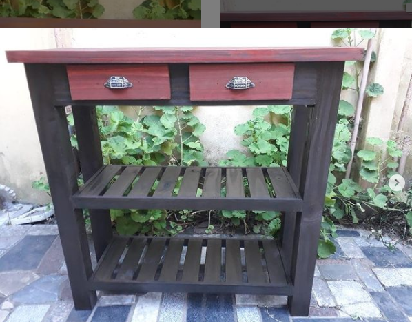

Muebles

Rack vitage
Ver MuebleMueble bahiut de cedro.
Ver MuebleMueble Rack de pino.
Ver MuebleMesa reciclada
Ver MuebleMesa de apoyo de pino.
Ver MuebleRack vitage
Ver MuebleMueble bahiut de cedro.
Ver MuebleMueble Rack de pino.
Ver MuebleMesa reciclada
Ver MuebleMesa de apoyo de pino.
Ver MuebleSoy Juvenal Lazarte, vivo en el bajo de San Isidro, y me dedico a realizar distintos muebles vintage a traves del reciclado de distintos tipos de madera, pasando por procesos de restauracion y remodelacion, mas el agregado, de adornos y detalles de hierro, siempre con el afan de no perder el estilo rustico que tanto caracteriza a mis trabajos.
Si te interesa se parte de nuestros proyectos de desarrollo tecnologico, a continuacion llene el formulario de contacto
formulario